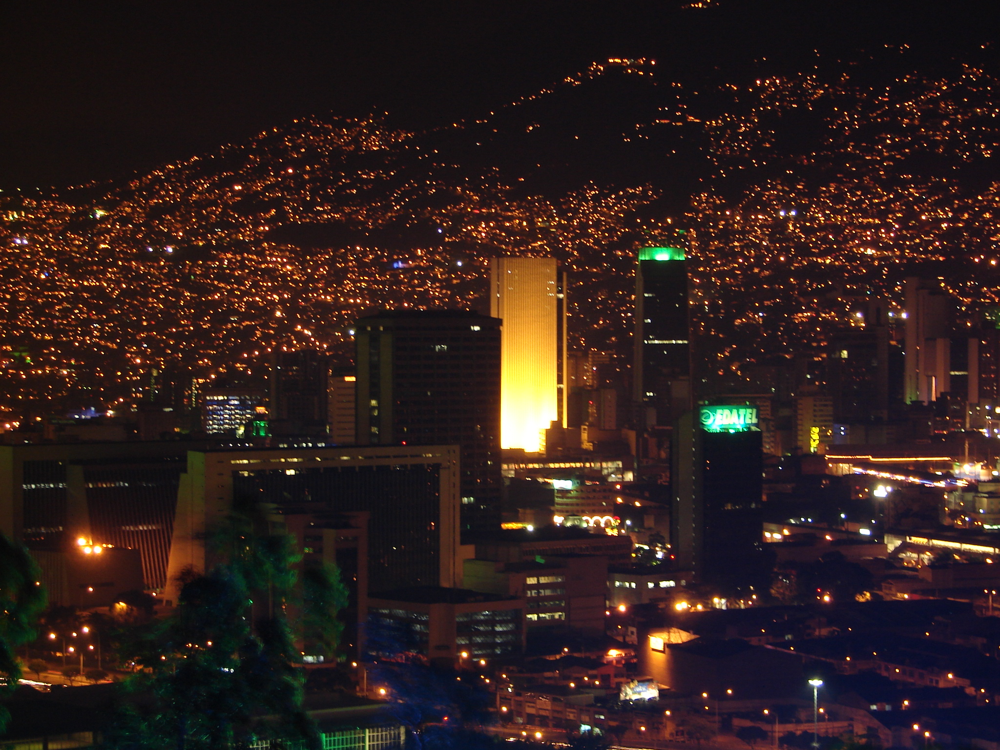

Fácil
Luces del Centro
- Distancia
- 10 km
- Duración
- 2 h
- Punto de encuentro
- Sede de Rueda Libre
$55.000
InscríbeteNuevo · Jueves a sábado
Descubre Medellín en bici cuando se encienden las luces
Todas incluyen bicicleta, casco, luces LED, chaleco reflectivo y guía.
Fácil
$55.000
Inscríbete
Medio
$75.000
Inscríbete
Difícil
$95.000
InscríbeteConsulta la distancia, la duración y el nivel.
Completa el formulario de reserva.
Pasa por la sede de Rueda Libre antes de salir.
Haz el recorrido con tu guía.